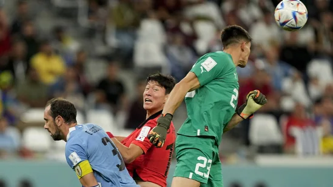

Rajasthan chief minister Ashok Gehlot had called Pilot a traitor, who betrayed the party.

Bhagat Singh Koshyari had said last week during an event in Aurangabad that Chhatrapati Shivaji Maharaj was an icon of "olden days". His statement had drawn flak from NCP and Uddhav Thackeray-led Shiv Sena faction.

Uruguay vs South Korea, highlights FIFA World Cup 2022: Luis Suárez-starrer Uruguay played out a goalless draw with South Korea in its Group H opener of the FIFA World Cup 2022 on Thursday.
When asked if there was a chance to get Suryakumar Yadav play in the Big Bash League - Australia's T20 league - Maxwell said they will have to sack every player on the roster to gather the amount needed to get the Indian Suryakumar Yadav on board.

Former Indian opener Wasim Jaffer has sparked a massive debate on Twitter after predicting India's playing XI for the 1st ODI against New Zealand on Thursday.